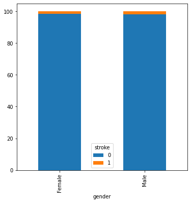

import pandas as pd
import matplotlib.pyplot as plt
import seaborn as sns
import numpy as npCredit: code from https://towardsdatascience.com/step-by-step-exploratory-data-analysis-on-stroke-dataset-840aefea8739 and https://www.kaggle.com/lirilkumaramal/heart-stroke
import pandas as pd
url = 'https://raw.githubusercontent.com/davidrkearney/colab-notebooks/main/datasets/strokes_training.csv'
df = pd.read_csv(url, error_bad_lines=False)
df| id | gender | age | hypertension | heart_disease | ever_married | work_type | Residence_type | avg_glucose_level | bmi | smoking_status | stroke | |
|---|---|---|---|---|---|---|---|---|---|---|---|---|
| 0 | 30669 | Male | 3.0 | 0 | 0 | No | children | Rural | 95.12 | 18.0 | NaN | 0 |
| 1 | 30468 | Male | 58.0 | 1 | 0 | Yes | Private | Urban | 87.96 | 39.2 | never smoked | 0 |
| 2 | 16523 | Female | 8.0 | 0 | 0 | No | Private | Urban | 110.89 | 17.6 | NaN | 0 |
| 3 | 56543 | Female | 70.0 | 0 | 0 | Yes | Private | Rural | 69.04 | 35.9 | formerly smoked | 0 |
| 4 | 46136 | Male | 14.0 | 0 | 0 | No | Never_worked | Rural | 161.28 | 19.1 | NaN | 0 |
| ... | ... | ... | ... | ... | ... | ... | ... | ... | ... | ... | ... | ... |
| 43395 | 56196 | Female | 10.0 | 0 | 0 | No | children | Urban | 58.64 | 20.4 | never smoked | 0 |
| 43396 | 5450 | Female | 56.0 | 0 | 0 | Yes | Govt_job | Urban | 213.61 | 55.4 | formerly smoked | 0 |
| 43397 | 28375 | Female | 82.0 | 1 | 0 | Yes | Private | Urban | 91.94 | 28.9 | formerly smoked | 0 |
| 43398 | 27973 | Male | 40.0 | 0 | 0 | Yes | Private | Urban | 99.16 | 33.2 | never smoked | 0 |
| 43399 | 36271 | Female | 82.0 | 0 | 0 | Yes | Private | Urban | 79.48 | 20.6 | never smoked | 0 |
43400 rows × 12 columns
df.info()<class 'pandas.core.frame.DataFrame'>
RangeIndex: 43400 entries, 0 to 43399
Data columns (total 12 columns):
# Column Non-Null Count Dtype
--- ------ -------------- -----
0 id 43400 non-null int64
1 gender 43400 non-null object
2 age 43400 non-null float64
3 hypertension 43400 non-null int64
4 heart_disease 43400 non-null int64
5 ever_married 43400 non-null object
6 work_type 43400 non-null object
7 Residence_type 43400 non-null object
8 avg_glucose_level 43400 non-null float64
9 bmi 41938 non-null float64
10 smoking_status 30108 non-null object
11 stroke 43400 non-null int64
dtypes: float64(3), int64(4), object(5)
memory usage: 4.0+ MBdf['stroke'].value_counts()0 42617
1 783
Name: stroke, dtype: int64# labeled target is unbalanced# Drop the id column
df.drop(columns=['id'], inplace=True)# Showing records where patient suffered from stroke but had missing value in bmi attribute.
df[df['bmi'].isna() & df['stroke'] == 1]| gender | age | hypertension | heart_disease | ever_married | work_type | Residence_type | avg_glucose_level | bmi | smoking_status | stroke | |
|---|---|---|---|---|---|---|---|---|---|---|---|
| 81 | Female | 61.0 | 0 | 0 | Yes | Self-employed | Rural | 202.21 | NaN | never smoked | 1 |
| 407 | Female | 59.0 | 0 | 0 | Yes | Private | Rural | 76.15 | NaN | NaN | 1 |
| 747 | Male | 78.0 | 0 | 1 | Yes | Private | Urban | 219.84 | NaN | NaN | 1 |
| 1139 | Male | 57.0 | 0 | 1 | No | Govt_job | Urban | 217.08 | NaN | NaN | 1 |
| 1613 | Male | 58.0 | 0 | 0 | Yes | Private | Rural | 189.84 | NaN | NaN | 1 |
| ... | ... | ... | ... | ... | ... | ... | ... | ... | ... | ... | ... |
| 42530 | Male | 66.0 | 0 | 0 | Yes | Self-employed | Urban | 182.89 | NaN | never smoked | 1 |
| 42839 | Female | 67.0 | 1 | 0 | Yes | Govt_job | Urban | 234.43 | NaN | never smoked | 1 |
| 43007 | Female | 69.0 | 0 | 1 | Yes | Self-employed | Rural | 89.19 | NaN | smokes | 1 |
| 43100 | Male | 67.0 | 0 | 0 | Yes | Self-employed | Urban | 136.79 | NaN | smokes | 1 |
| 43339 | Female | 76.0 | 0 | 0 | No | Private | Rural | 100.55 | NaN | never smoked | 1 |
140 rows × 11 columns
# Replace the missing values with mean of bmi attribute
df['bmi'].fillna(np.round(df['bmi'].mean(), 1), inplace = True)# Create a new category named 'not known'
df['smoking_status'].fillna('not known', inplace=True)
print(df['smoking_status'].value_counts())never smoked 16053
not known 13292
formerly smoked 7493
smokes 6562
Name: smoking_status, dtype: int64# Discretize with respective equal-width bin
df['age_binned'] = pd.cut(df['age'], np.arange(0, 91, 5))
df['avg_glucose_level_binned'] = pd.cut(df['avg_glucose_level'], np.arange(0, 301, 10))
df['bmi_binned'] = pd.cut(df['bmi'], np.arange(0, 101, 5))SettingWithCopyWarning:
A value is trying to be set on a copy of a slice from a DataFrame.
Try using .loc[row_indexer,col_indexer] = value instead
See the caveats in the documentation: https://pandas.pydata.org/pandas-docs/stable/user_guide/indexing.html#returning-a-view-versus-a-copy
df['age_binned'] = pd.cut(df['age'], np.arange(0, 91, 5))
<ipython-input-23-b4c4cb89b1bd>:3: SettingWithCopyWarning:
A value is trying to be set on a copy of a slice from a DataFrame.
Try using .loc[row_indexer,col_indexer] = value instead
See the caveats in the documentation: https://pandas.pydata.org/pandas-docs/stable/user_guide/indexing.html#returning-a-view-versus-a-copy
df['avg_glucose_level_binned'] = pd.cut(df['avg_glucose_level'], np.arange(0, 301, 10))
<ipython-input-23-b4c4cb89b1bd>:4: SettingWithCopyWarning:
A value is trying to be set on a copy of a slice from a DataFrame.
Try using .loc[row_indexer,col_indexer] = value instead
See the caveats in the documentation: https://pandas.pydata.org/pandas-docs/stable/user_guide/indexing.html#returning-a-view-versus-a-copy
df['bmi_binned'] = pd.cut(df['bmi'], np.arange(0, 101, 5))# Create the correlation heatmap
heatmap = sns.heatmap(df[['age_norm', 'avg_glucose_level_norm', 'bmi_norm']].corr(), vmin=-1, vmax=1, annot=True)
# Create the title
heatmap.set_title('Correlation Heatmap');
def get_stacked_bar_chart(column):
# Get the count of records by column and stroke
df_pct = df.groupby([column, 'stroke'])['age'].count()
# Create proper DataFrame's format
df_pct = df_pct.unstack()
return df_pct.plot.bar(stacked=True, figsize=(6,6), width=1);def get_100_percent_stacked_bar_chart(column, width = 0.5):
# Get the count of records by column and stroke
df_breakdown = df.groupby([column, 'stroke'])['age'].count()
# Get the count of records by gender
df_total = df.groupby([column])['age'].count()
# Get the percentage for 100% stacked bar chart
df_pct = df_breakdown / df_total * 100
# Create proper DataFrame's format
df_pct = df_pct.unstack()
return df_pct.plot.bar(stacked=True, figsize=(6,6), width=width);# Age related to risk
get_stacked_bar_chart('age_binned')<AxesSubplot:xlabel='age_binned'>get_100_percent_stacked_bar_chart('age_binned', width = 0.9)<AxesSubplot:xlabel='age_binned'>get_stacked_bar_chart('bmi_binned')
get_100_percent_stacked_bar_chart('bmi_binned', width = 0.9)<AxesSubplot:xlabel='bmi_binned'>get_stacked_bar_chart('avg_glucose_level_binned')
get_100_percent_stacked_bar_chart('avg_glucose_level_binned', width = 0.9)<AxesSubplot:xlabel='avg_glucose_level_binned'>
get_100_percent_stacked_bar_chart('hypertension')
get_100_percent_stacked_bar_chart('heart_disease')<AxesSubplot:xlabel='heart_disease'>get_100_percent_stacked_bar_chart('gender')
get_100_percent_stacked_bar_chart('Residence_type')<AxesSubplot:xlabel='Residence_type'>
get_100_percent_stacked_bar_chart('work_type')
df.groupby(['work_type'])[['age']].agg(['count', 'mean'])| age | ||
|---|---|---|
| count | mean | |
| work_type | ||
| Govt_job | 5438 | 49.098750 |
| Never_worked | 177 | 17.757062 |
| Private | 24827 | 45.016837 |
| Self-employed | 6793 | 59.307817 |
| children | 6154 | 6.698018 |
get_100_percent_stacked_bar_chart('ever_married')
df.groupby(['ever_married'])[['age']].agg(['count', 'mean'])| age | ||
|---|---|---|
| count | mean | |
| ever_married | ||
| No | 15456 | 21.237487 |
| Yes | 27933 | 53.829735 |
g = sns.catplot(x="Residence_type", hue="smoking_status", col="work_type",
data=df, kind="count",
height=4, aspect=.7)missingno.matrix(df, figsize = (30,5))NameError: name 'missingno' is not definedfig, (ax1, ax2, ax3, ax4) = plt.subplots(1,4,figsize=(25,7))
fig.suptitle("Countplot for the dataset", fontsize=35)
sns.countplot(x="gender", data=df,ax=ax1)
sns.countplot(x="stroke", data=df,ax=ax2)
sns.countplot(x="ever_married", data=df,ax=ax3)
sns.countplot(x="hypertension", data=df,ax=ax4)<AxesSubplot:xlabel='hypertension', ylabel='count'>sns.displot(x="age", data=df, kind="kde", hue="gender", col="smoking_status", row="Residence_type")fig, (ax1, ax2, ax3) = plt.subplots(1,3,figsize=(20,7))
fig.suptitle("Boxplot for Dataset", fontsize=35)
sns.boxplot(x="stroke", y="avg_glucose_level", data=df,ax=ax1)
sns.boxplot(x="stroke", y="bmi", data=df,ax=ax2)
sns.boxplot(x="stroke", y="age", data=df,ax=ax3)<AxesSubplot:xlabel='stroke', ylabel='age'># Compute a correlation matrix and convert to long-form
corr_mat = df.corr("kendall").stack().reset_index(name="correlation")
# Draw each cell as a scatter point with varying size and color
g = sns.relplot(
data=corr_mat,
x="level_0", y="level_1", hue="correlation", size="correlation",
palette="vlag", hue_norm=(-1, 1), edgecolor=".7",
height=5, sizes=(50, 250), size_norm=(-.2, .8),
)
# Tweak the figure to finalize
g.set(xlabel="", ylabel="", aspect="equal")
g.despine(left=True, bottom=True)
g.ax.margins(0.25)
for label in g.ax.get_xticklabels():
label.set_rotation(90)
for artist in g.legend.legendHandles:
artist.set_edgecolor(".1")strokes_temp_df=df
strokes_temp_df[['stroke','hypertension']] = df[['stroke','hypertension']].astype('int')
corr = strokes_temp_df.corr()
corr.style.background_gradient()
corr.style.background_gradient().set_precision(2)| age | hypertension | heart_disease | avg_glucose_level | bmi | stroke | age_norm | avg_glucose_level_norm | bmi_norm | |
|---|---|---|---|---|---|---|---|---|---|
| age | 1.00 | 0.27 | 0.25 | 0.24 | 0.35 | 0.16 | 1.00 | 0.24 | 0.35 |
| hypertension | 0.27 | 1.00 | 0.12 | 0.16 | 0.15 | 0.08 | 0.27 | 0.16 | 0.15 |
| heart_disease | 0.25 | 0.12 | 1.00 | 0.15 | 0.05 | 0.11 | 0.25 | 0.15 | 0.05 |
| avg_glucose_level | 0.24 | 0.16 | 0.15 | 1.00 | 0.18 | 0.08 | 0.24 | 1.00 | 0.18 |
| bmi | 0.35 | 0.15 | 0.05 | 0.18 | 1.00 | 0.02 | 0.35 | 0.18 | 1.00 |
| stroke | 0.16 | 0.08 | 0.11 | 0.08 | 0.02 | 1.00 | 0.16 | 0.08 | 0.02 |
| age_norm | 1.00 | 0.27 | 0.25 | 0.24 | 0.35 | 0.16 | 1.00 | 0.24 | 0.35 |
| avg_glucose_level_norm | 0.24 | 0.16 | 0.15 | 1.00 | 0.18 | 0.08 | 0.24 | 1.00 | 0.18 |
| bmi_norm | 0.35 | 0.15 | 0.05 | 0.18 | 1.00 | 0.02 | 0.35 | 0.18 | 1.00 |